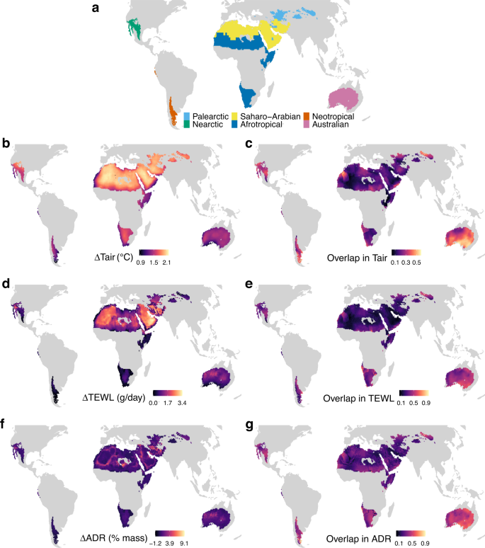
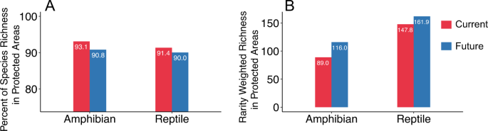
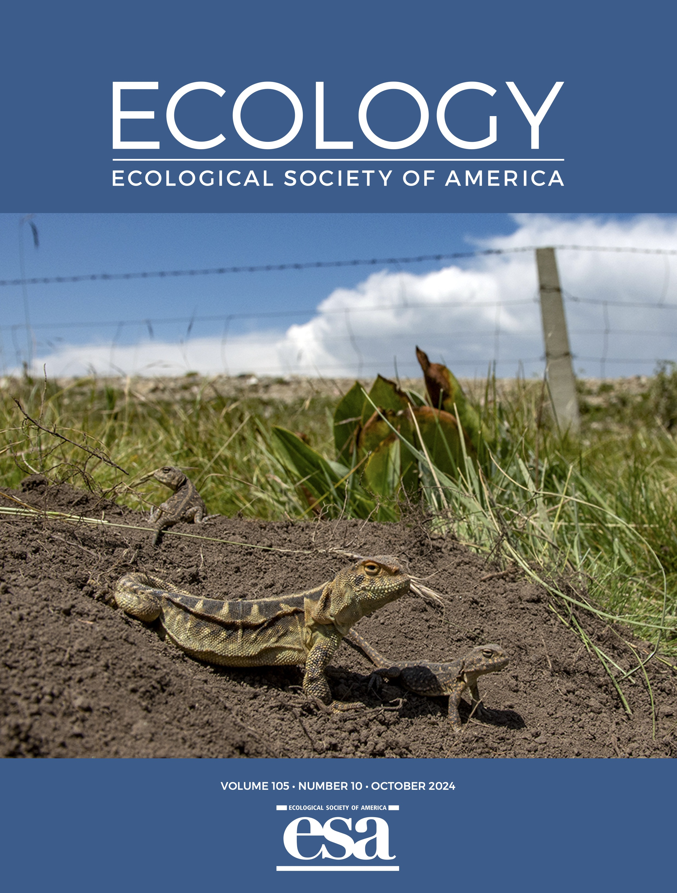
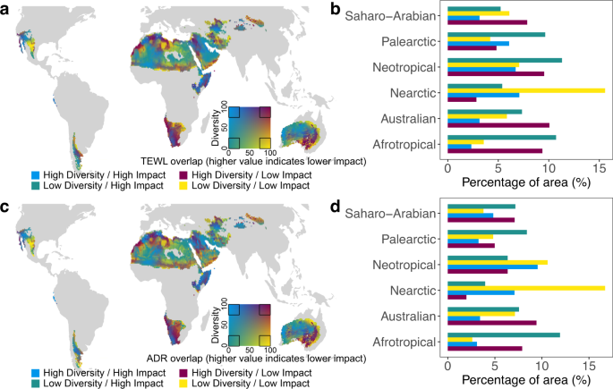
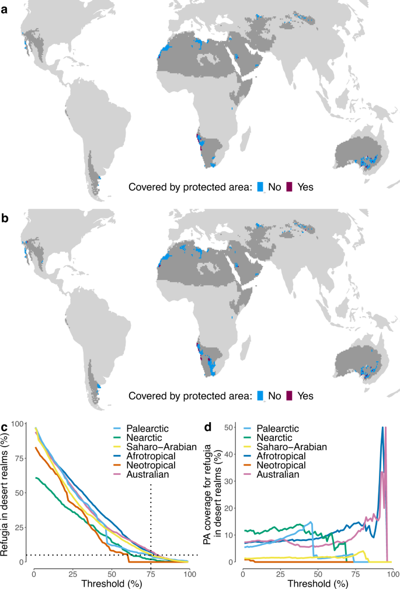
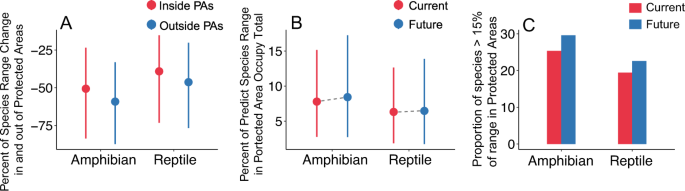
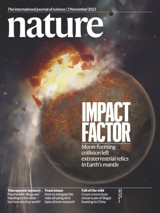

Article · Nature Communications Open Access
Feature · Teachers' Day special
How a mentor, and a lab, teach animals — and students — to live with a warming world.



Youth researcher, doctoral supervisor, Assistant Dean — IOZ, Princeton, SYSU.

Buffering the next generation of ecologists — a Teachers' Day letter from the lab.




Metabolic constraints — a foil to APEC terrestrial thermal-safety margins.
Heart-rate energetics before departure — pairs with desert bird work.
Huey, Ma, Levy & Kearney — overlooked subterranean seasons.
Why this microsite borrows Harding-like serif, Swiss grids and sentence case.